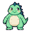

<!doctype html>
<html lang="en">
<head>
<meta charset="utf-8">
<meta name="viewport" content="width=device-width, initial-scale=1">
<meta name="description" content="The one hundred sprite expressions BabyZilla's desktop pet can wear, with the motion each one uses.">
<title>BabyZilla: one hundred faces</title>
<link rel="stylesheet" href="gallery.css">
</head>
<body>
<div class="shell">
  <aside class="rail">
    <div class="brand">
      
      <span>BabyZilla pet</span>
    </div>
    <h1>One hundred faces</h1>
    <p class="lede">Every expression the pet can wear, drawn at 64 pixels and shown at four times that. It picks one from what opencode is doing.</p>

    <div class="filters" role="group" aria-label="Filter by kind">
      <button class="chip" data-filter="all" aria-pressed="true">all</button>
      <button class="chip" data-filter="idle" aria-pressed="false">idle</button>
      <button class="chip" data-filter="prompt" aria-pressed="false">prompt</button>
      <button class="chip" data-filter="tools" aria-pressed="false">tools</button>
      <button class="chip" data-filter="outcome" aria-pressed="false">outcome</button>
      <button class="chip" data-filter="core" aria-pressed="false">core</button>
      <button class="chip" data-filter="system" aria-pressed="false">system</button>
      <button class="chip" data-filter="emotion" aria-pressed="false">emotion</button>
      <button class="chip" data-filter="sleep" aria-pressed="false">sleep</button>
      <button class="chip" data-filter="egg" aria-pressed="false">eggs</button>
    </div>

    <p class="note">Motion is procedural: <code>bob</code>, <code>pop</code>, <code>shake</code>, <code>float</code>, <code>still</code>. Try one live with <code>babyzilla pet emit &lt;id&gt;</code>.</p>
    <p class="count" id="count"></p>
  </aside>

  <main class="field" id="field" aria-live="polite"></main>
</div>

<script src="gallery-data.js"></script>
<script>
(() => {
  const field = document.getElementById("field");
  const count = document.getElementById("count");
  const data = window.PET_DATA;
  if (!data) {
    field.innerHTML = "<p class=\"note\" style=\"padding:1rem\">gallery-data.js is missing next to this page. Run <code>babyzilla pet install</code>.</p>";
    return;
  }

  const frag = document.createDocumentFragment();
  for (const e of data.expressions) {
    const cell = document.createElement("article");
    cell.className = "cell";
    cell.dataset.kind = e.cat || guess(e.id);
    cell.tabIndex = 0;
    cell.innerHTML = `
      <span class="motion">${e.motion}</span>
      <div class="sprite"></div>
      <h2 class="name">${e.label}</h2>
      <p class="id">${e.id}</p>
      <p class="line">${(e.lines && e.lines[0]) || ""}</p>`;
    frag.appendChild(cell);
  }
  field.appendChild(frag);

  // pet-data.json does not carry `cat`; derive it from the id when absent.
  function guess(id) {
    if (/^tool-|^shell-|^subagent/.test(id)) return "tools";
    if (["success","celebrate","proud","error","oops","retry","test-pass","test-fail","conflict","shrug"].includes(id)) return "outcome";
    return "idle";
  }

  // categories come from the build; fall back to the id heuristic above
  const cats = new Set([...document.querySelectorAll(".cell")].map((c) => c.dataset.kind));

  function apply(filter) {
    let shown = 0;
    for (const cell of field.children) {
      const hit = filter === "all" || cell.dataset.kind === filter;
      cell.hidden = !hit;
      if (hit) shown++;
    }
    const noun = shown === 1 ? "expression" : "expressions";
    count.textContent = `${shown} ${noun}` + (filter === "all" ? "" : ` in ${filter}`);
    for (const b of document.querySelectorAll(".chip")) {
      b.setAttribute("aria-pressed", String(b.dataset.filter === filter));
    }
  }

  for (const b of document.querySelectorAll(".chip")) {
    b.addEventListener("click", () => apply(b.dataset.filter));
  }
  // state in the URL, so a filter survives a reload
  const initial = location.hash.replace("#", "") || "all";
  apply(cats.has(initial) || initial === "all" ? initial : "all");
})();
</script>
</body>
</html>
